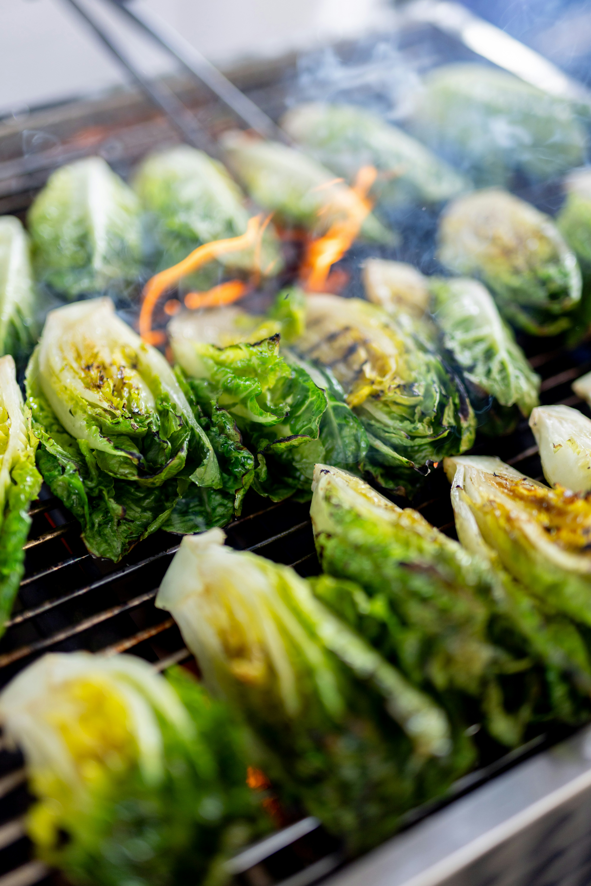

Home
Grilled Caesar Salad

Photo by Filipp Romanovski on Unsplash
A smoky twist on the classic Caesar salad, made with romaine hearts grilled until lightly charred and tender-crisp, then topped with creamy Caesar dressing, Parmesan, and crunchy croutons.
This grilled Caesar salad is the perfect dish for a warm summer afternoon. Grilling the romaine gives the crisp leaves a slightly smoky, charred flavor while keeping the center fresh and crunchy. Finished with creamy Caesar dressing, plenty of Parmesan, and crisp croutons, it's simple, fresh, and just a little unexpected. Serve it on its own for a light lunch or alongside something hot off the grill for an easy summer dinner.
Ingredients:
- 2 hearts romaine lettuce split in half length-wise
- 3 tablespoons mayonnaise
- 2 tablespoons Worcestershire sauce
- 2 lemons halved plus 1 tablespoon fresh lemon juice
- 1 tablespoon Dijon mustard
- 1 teaspoon red wine vinegar
- 2 cloves garlic, minced
- 3/4 cup extra-virgin olive oil, plus more for grilling
- Kosher salt and freshly ground black pepper
- 1 tablespoon sugar
Steps:
- Preheat a grill to medium to high heat
- While the grill heats up, prepare the Caesar dressing. In a bowl, whisk together the mayonnaise, Worcestershire sauce, lemon juice, mustard, red wine vinegar, and garlic until smooth and well combined. Slowly drizzle in the olive oil, whisking continuously as you pour, until the dressing is fully emulsified. Add the Parmesan and whisk again until incorporated. Season with salt and freshly ground black pepper to taste.
- Set the dressing aside while you prepare the romaine hearts for grilling. Lightly drizzle both sides of the romaine with olive oil and season with salt and pepper. Place the romaine cut-side down on the hot grill and cook for 2–3 minutes, or until the leaves are lightly charred with visible grill marks while still crisp.
- On a small plate lay out the sugar and dip the cut sides of the halved lemons into the sugar. Return to your grill and place the lemons sugar side down on the grill and cook until lightly charred about 2-3 minutes
- Place the grilled romaine hearts on a plate, cover with some of the Caesar dressing we made in step 2 and top with croutons and extra parmesan cheese if desired. Before serving squeeze the sugar grilled lemon over the salad. Bon Appetit!
Recipe adapted from Macela Valladolid on Food Network